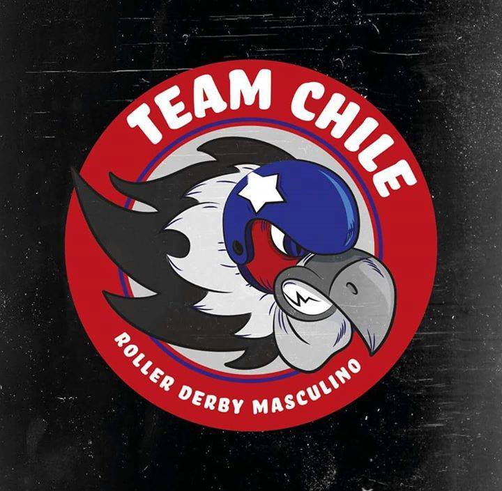
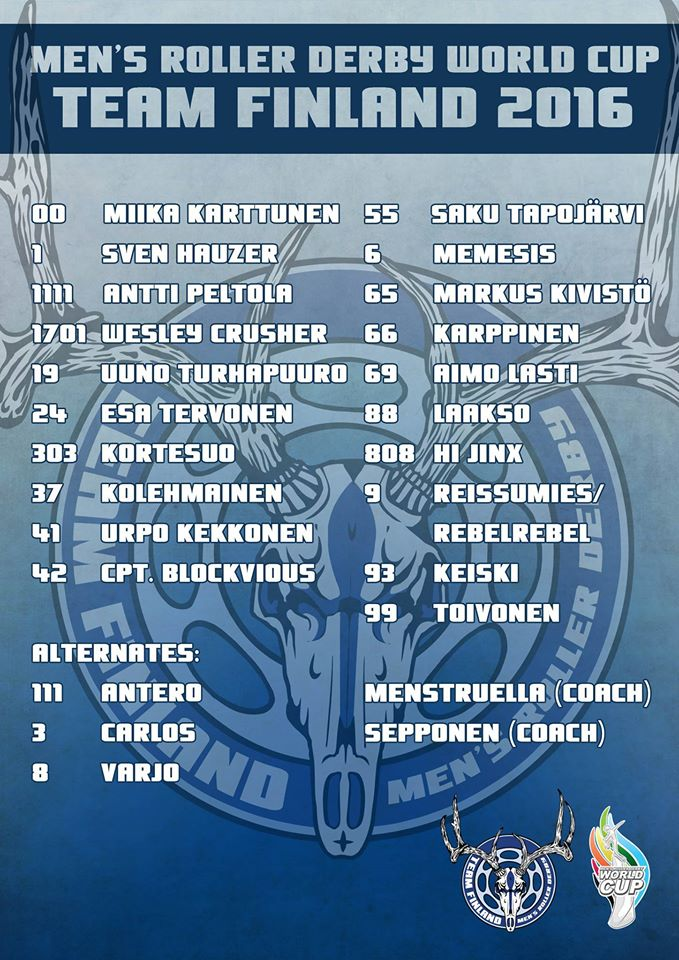
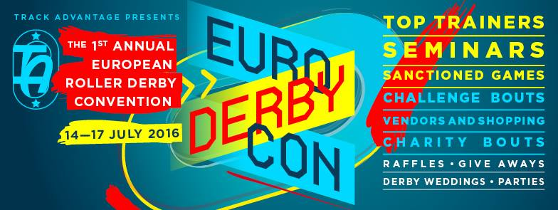
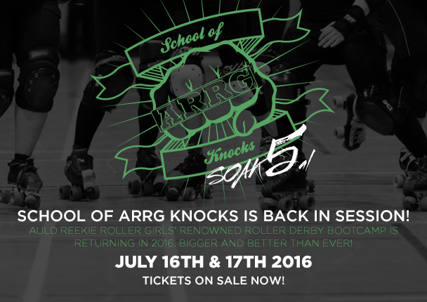

Save our Sharks in September!
Partly because it's grass-roots itself, Roller Derby has always been happy to raise money for other good causes. The 3rd of September might have a first even for Roller Derby, though, as Glasgow Caledonian University's ARC hosts a double-header extravaganza with the aim of raising money to save endangered sharks!
Organiser, Lisa Alexander, used to skate for Perth's Fair City and Edinburgh's Auld Reekie, before taking a break from derby in order to dedicate herself to her degree in Environmental Science with the University of the Highlands and Islands. As part of this, she's raising funds to support and participate in a conservation study in Fiji.

Sharks are surprisingly endangered, mostly due to overfishing (for sharksfin soup and other foods), and the fact that, as apex predators, pollution affects them far more severely than other animals (as they eat all the pollution in their prey, too). Unfortunately, apex predators are also extremely important to the ecosystems they're part of - just as wolves kept deer populations under control in Scotland until we wiped them out, sharks manage the population of the rest of the ocean's inhabitants, and a threat to them is a threat to the entire balance of the sea's ecosystem.
While she also has a more formal fundraising page here (which has more information on the plan and situation), Lisa always planned to include Roller Derby in her approach.
"I guess it was always a fundraising event that I had in mind," she told us. "I've been involved in Roller Derby for 5 years and, although I've stopped skating to concentrate on the project, I felt like I still had the experience and support network to make it a successful fundraiser. I know how amazing and supportive the Roller Derby community is, and I knew that they would get behind the project; because, who doesn't love sharks, or roller derby?"
With skaters participating from all across Scotland's leagues, the event will feature both a female and a co-ed mixed bout, as well as a host of stalls, a raffle (with a selection of prizes including handmade glass vases, and climbing tickets!), tombola, and plenty of shark-related theming and puns, it will be worth turning up even without the good cause. A shark-shaped stamp has even been sourced for stamping entrants...
The Facebook event page is here: https://www.facebook.com/events/829978330437565/ with the tickets available from Brown Paper Tickets here: http://m.bpt.me/event/2580086
Doors open at 12:20 for the first bout around 20 to 30 minutes later.
Tickets are £10 on the day (free for under 14s), or just £8 in advance online.
Science v Magic: Twice in one month!
We've previously mentioned that Glasgow Roller Derby are hosting an exhibition double header on the 20th of the this month, featuring a Science v Fantasy themed B-feature.
However, if you like the idea of pitting SF against F, then you don't even have to wait that long, as Glasgow's only Coed league, Mean City Roller Derby, are holding their own coed extravaganza this weekend (13th August, 2pm) as the Wizards take on Gallifrey's finest Timelords. This is an opportunity to see both established MCRD skaters, as well as their newest up-and-coming skaters in one place.
 Just one of four (4!) posters that Mean City produced for the event!
Just one of four (4!) posters that Mean City produced for the event!
The event will be at Mean City's usual venue, the ARC Sports Centre in Glasgow, with afterparty at Rufus T Firefly. (Links above link to maps.)
Advance warning also: the following week (2oth August) features a bit of a clash. As well as the aforementioned Soy Division v Vagine Regime/Science v Fantasy double header in Glasgow, there will also be a Fierce Valley Roller Girls / Bairn City Rollers joint double header in Grangemouth! As the second bout in the schedule features the long anticipated rematch of Bairn City's Skelpies against Tyne and Fear B (the Inglorious B**stards), it seems that both events have unmissable second fixtures...
It's possible, based on the preliminary timings, to just about see the first bout in Glasgow, and then rush across Scotland by car to get to Grangemouth in time for both bouts, but we're not sure we'd risk it...
[The approximate timings are:
First bout (Science v Fantasy) at Glasgow, skateouts start 13:05 (implies end around 14:30)
Second bout (Soy Division/Vagine Regime) ends 17:10? (which implies a 15:45 start, or earlier depending on slack?).
First bout at Grangemouth (FVRG intraleague) starts 15:30
Second bout (Bairn City Rollers' Skelpies v Tyne and Fear B) starts 17:20.
It takes around 40 minutes to get from the centre of Glasgow to the centre of Grangemouth, so it should, hypothetically, be possible to see all of the mixed bout at Glasgow, jump in a car, and arrive about 20 minutes before the first game starts in Grangemouth. Assuming that derby runs to time, which is, of course, not something we can ever rely on, and that our guesses about the timings are correct... ]
MRDWC2016 - Rankings and Statistics
As regular readers know, we've been regularly performing statistical analyses of Roller Derby for 2 years now. One of the first things we did was a comparison of the rankings obtained at the 2014 Blood and Thunder World Cup with the inferred actual strengths of the teams present (as determined from the scores they achieved against other teams in the contest). We also performed a similar analysis against the first Men's Roller Derby World Cup, also in 2014.
At the time, we noted that MRDWC 2014 did rather better than B&TWC2014, but that it was also much easier to run a tournament with good "true" rankings if you had less teams present. The more teams you have, the more important seeding and tournament structure is in determining how close your final rankings are to the true orderings of team strength.
Men's Roller Derby World Cup 2016 has just completed, and it had rather more competitors than the first one (20, to the original's 15). This time, the teams were arranged in groups, carefully structured so that each group had 1 seed from the Top 4 of the 2014 MRDWC, 1 seed from the remaining Top 8, and the remaining 3 slots with teams from the bottom 7 from MRDC2014, or unseeded teams new to the tournament.
This seeding system, assuming that teams were roughly ordered in performance similarly to 2014 (and that no unseeded teams were better than the old Top 8) was designed to reduce the probability of poor rankings for teams in the tournament, whilst still allowing for the favoured "group playoffs + single-elimination tournament and consolation tournaments" structure.
So, how did they do?
Although we no longer seriously use frequentist approaches to estimate team strength (as they're not capable of estimating the confidence range of the resulting estimates well, and have well-established deficiencies compared to Bayesian methods for these tasks), we will start with the (frequentist) Massey rankings for the teams, for comparison with the previous article. The table below shows Massey rankings (and calculated power) based on both Score Difference and Score Ratio, compared to the MRDWC official tournament placements. For both rankings, we've also calculated the rankings if you remove blowout bouts (defined here as bouts where the winner scored more than 10 times the loser), as blowouts particularly skew Ratio based rankings (as a single extra point scored by the loser can affect the ratio by a significant amount). We have bolded the teams where positions have changed, relative to the Official Ranking.
| All | No Blowouts (10%) | |||
| MRDWC Official Ranking | Rank with respect to Score Difference | Rank with respect to Score Ratio | Rank with respect to Score Difference | Rank with respect to Score Ratio |
|
|
|
|
|
Since the previous World Cup article, we've developed the theory of our statistical approaches somewhat, and now use Bayesian inference techniques to estimate the underlying strength of teams. (For example, see our examination of the European Smackdown).
We took the full set of bouts from MRDWC 2016 and performed a Bayesian Monte-Carlo inference on them, to determine the estimated strengths of each team, relative to the top-ranked team, Team USA. As we are using Score Ratio here as our ranking mechanism, we also performed the same inference on the set of bouts with blowouts (>1:10 ratio) removed.
 Fig 1 - full set of estimated strength distributions, calculated with respect to estimated score ratio against Team USA
Fig 1 - full set of estimated strength distributions, calculated with respect to estimated score ratio against Team USA
 Fig 2 - full set of estimated strength distributions, calculated with respect to estimated score ratio against Team USA, excluding bouts with blowouts (1:10 ratio)
Fig 2 - full set of estimated strength distributions, calculated with respect to estimated score ratio against Team USA, excluding bouts with blowouts (1:10 ratio)
It should be easy to see that, whilst removing blowouts does cause some global compression of the distributions (generally making the difference between the USA and everyone else look a bit smaller), there's a general maintenance of the relative features within the two results. The ordering of the results is the same as that for the Massey rankings derived from score ratios, although the precise values differ slightly (by less than 10% in all cases, and mostly less than 2%).
In particular, England, Australia, Canada and France are clearly in a class of their own at the top of the distribution (with England clearly separate from the other 3 as well), and Netherlands are clearly separate at the bottom end.
| [gallery ids="8507,8508" type="rectangular"] |
| Fig 3: England and Australia highlighted in the results above. |
 Fig 4: Netherlands distribution of score ratios, in the case where blowouts are excluded.
Fig 4: Netherlands distribution of score ratios, in the case where blowouts are excluded.
As can be seen, there are actually relatively few points of disagreement between the MRDWC rankings and the true ordering of team ability. There are even fewer if we eliminate statistically insignificant differences (for example, Sweden, Belgium and Ireland are statistically identical in strength, so any permutation of their ordering is a valid one).
 Mexico, Wales, Finland highlighted
Mexico, Wales, Finland highlighted
The first placement error we see is Mexico. Narrowly missing out on the second group place in Group Green to Wales, the highest rank that Mexico could attain in the tournament stage was 9th, which they happily took. In fact, Mexico's predicted strength is (narrowly) higher than that of Finland, who placed bottom of the Top 8 teams, qualifying via the second spot in Group Red. This results in a small placement error of just one position, as a result of the tournament structure (and the fact that Mexico is actually stronger than a seeded team). [Mexico does much better when ranked with score difference, as their bout against Canada was particularly low scoring, thanks to exceptional Mexican defence.]
Ironically, Mexico was originally in Group Red with Finland, only being moved to replace Colombia when they pulled out from the tournament only two weeks before. If they had remained in Group Red, they would likely have taken the second qualifier place, and attained that 8th place (while Finland would have taken 9th). In that instance, however, Scotland would have been significantly unfairly penalised for their group, being unable to attain the 10th place position that they did.
 Japan, Puerto Rico, Chile highlighted (no-blowouts case)
Japan, Puerto Rico, Chile highlighted (no-blowouts case)
Further down, the only other significant placement error concerns Puerto Rico, Japan and Chile. Coming 4th in their Group, Puerto Rico qualified for the 13th to 16th place tournament, where they placed 16th. The 5th Group place in their Group, Blue, was taken by Netherlands, the lowest-placed team in the tournament - literally every other team in the tournament was assured at least 4th place in that Group.
In fact, Puerto Rico's estimated true strength is statistically equivalent to that of Japan or Chile, who finished last in their group, and therefore were limited to a maximum final placement of 17th. (Complicating matters is that the team with which PR are statistically tied depends on if we include blow-outs or not - including that no-score game against USA pushes Japan's strength low enough that they look worse than Chile and PR, but this is probably unfair to Japan.)
Coming back to the statistically tied teams:
Team France will be cheered, perhaps, to note that their estimated strength is statistically inseparable from that of 4th place Team Canada. The France/Canada game was particularly closely contested in the first period, with Canada only managing a convincing win thanks to a much better second. [Indeed, when ranked on Score Difference, France look stronger than Canada, to a low significance, thanks to that low-scoring CAN/MEX game.]
 France, Canada highlighted, showing statistical inseparability.
France, Canada highlighted, showing statistical inseparability.
Our second set of statistically tied competitors are Sweden, Belgium and Ireland. While Belgium and Sweden played a close game, to Sweden's advantage, on Day 4, Ireland never played the other two - we'd suggest that such bouts would be worth organising!
Following them, Germany and Italy are also statistically inseparable, as are Puerto Rico and Chile (mentioned above).
If we consider statistically tied teams to have the same rank, then all of this means that our rankings for MRDWC would be (bold indicates disagreement with MRDWC, colours that there's a statistical tie with all teams of that colour and MRDWC's result might change if you ran it again):
| 1. USA 2. ENG 3. AUS 4= CAN 4= FRA 6. ARG 7. WAL 8. MEX 9. FIN 10. SCO 11= IRE 11= SWE 11= BEL 14= ITL 14= GER 16= PR 16= JPN 16= CHI 19. ESP 20. NED |
Overall, MRDWC 2016 did particularly well for a "Groups+Single-elimination" style tournament of its size, with only ~2 significant placement errors, by only 1 or 2 ranks. Some of this is due to luck in the number of statistically-tied teams, but the construction of the seeded groups was clearly helpful in eliminating large-scale disparities - one of the two placement errors was specifically due to an unexpectedly high rank from an unseeded team. We hope that future tournaments will bear this in mind, if they decide to use a "Groups+Single-elimination" structure.
(This blog still favours Swiss-system tournaments, at least in place of Group stages; such a system would have eliminated both placement errors in this case, at the cost of a less easily read schedule on the second half of the first day, and much of the second.)
As always, these analyses are based on code available at our GitHub repository. (Some tweaking of filenames may be needed.)
Fierce Valley Roller Girls - Wanna Join?


On 7th August, FVRG will be hosting a roller derby taster in Grangemouth Sports Complex from 11.30 - 13.30.
Fierce Valley Roller Girls is a not-for-profit women's roller derby league within the Forth Valley area. Whilst our competitive team is women-only, we welcome all genders to be referee or non-skating members. Our training sessions and our home games are held in Grangemouth Sports Complex.If you are interested in joining Fierce Valley Roller Girls and are aged 18 or over, please complete our Registration Form here to reserve your place.
Signing up as a competitive skater or as a referee? If you would like to register as either a skater or a referee, the taster session will give you the opportunity to learn the basics of skating (and stopping!) safely. You will be buddied up with an experienced skater who will share their wisdom - and their equipment - with you. Please bring your own mouth guard.
After the taster session, we will welcome you into a dedicated roller derby training programme for beginners, tailor-made and led by FVRG coaches. On completion of the beginners training, you will also attend the intermediate training, where your roller derby 'minimum skills' will be assessed. Beginner-training is held on Sunday mornings; intermediate-training is held on Wednesday nights.
Competitive skaters will then move into the advanced training programme and have the opportunity to try out for our travel team. Advanced-training is held on Friday nights; team-training is held on Tuesday nights.
Upon completion of their intermediate training, referees will branch off into the referee training programme. It's common for referees to gain their basic training in our intermediate sessions, and then move onto officiating drills in the advanced and team sessions.
Signing up as a non-skating member? Not everyone in at FVRG skates, believe it or not. If you want to be part of the roller derby community but don't wish to compete of officiate, then you can join us a Non Skating Member. We're always looking for 'Non Skating Officials' (NSOs); artwork designers; photographers; bloggers - the list goes on. All we ask is that you attend at least one of our 'scrims' (internal games) per month to keep you integrated with the league and to learn the rules of the game.
We hope to see you there !
MRDWC 2016 Team Review: Men's Roller Derby - Team Italy
In Group Orange, they face the tough seeds of England and Argentina, the slightly more defeatable Sweden, and fellow new team Chile.

We caught up with Italy's Fast & Furio before their first game today to find out how they felt.
This is the first time Team Italy has attended MRDWC. What are you aiming for here in this contest?
We're not really thinking about the contest because it's our very first time - we had just one bout before this World Cup. So we just want to go home with some good memories, good sharing, and a team spirit that will lead us to future games (maybe with results better than the ones we might get here - because we are going to play against teams that are very strong, very experienced, so it is not going to be easy to get points, but we will try were we can)!
So how much time have you had to practice together as a team?
We have been practicing together for about a year; we seen each other once a month from October 2015 up to June this year. We have just one bout and a few scrimmages on top of that.
And who are you most looking forward to playing?
We've just seen the England [v Sweden] game and there's lots of skaters which inspire me a lot. We just watched Reaper, maybe the best jammer there is, certainly top 3... So, even if we're going to get zero points, we don't really care. You're going to play your heroes.
How's Team Italy raised resources for MRDWC 2016?
We have just one sponsor - Roll line - that provided us all our uniforms and some other gadgets. We have some partnerships with Officina Roller Derby, there is a shop back in Italy, and then we've been fundraising for donations, working on merchandising (we have t-shirts, wooden bowties...).
Team Italy's first game was against Chile on Thursday. Their next is against Sweden on Track 1, midday Calgary time Friday.
Men's Roller Derby World Cup Round-up
So, it's finally MRDWC 2016.
If you're watching at home, or at the event, we hope you have a great time and that we at the blog can contribute to that.
Here's a roundup of resources you might find useful.
Firstly, our Team Profiles, published over the past weeks. Learn a bit about each team by clicking here.
The groups are:
Group Red: Finland Ireland Japan Scotland USA
Group Orange: Argentina Chile England Italy Sweden
Group Green: Canada Spain Germany Mexico Wales
Group Blue: Australia Belgium France Netherlands Puerto_Rico
And there's many timetables and things to keep you straight. Ours is here:http://aoanla.pythonanywhere.com/mrdwc1.html with livestream links and FTS links and multiple timezones.
But Derby Central and Talk Derby To Me have their own coverage too, and we encourage you to use them!
MRDWC 2016 Team Review: Seleccion Argentina de Roller Derby Masculino
Now heading into the last few teams for our Men's Roller Derby World Cup profiles, we're in Latin America. Despite the popularity of co-ed roller derby in Latin America, only Argentina sent a team to the last Men's Roller Derby World Cup... and they're back this time, as Seleccion Argentina de Roller Derby Masculino.
Last time around, despite a very short roster, Argentina performed admirably, taking a 7th place draw with Power of Scotland in the final rankings. They handily defeated both Netherlands and Sweden, and only narrowly lost to Australia's Wizards of Aus in a close final bout. Only England and France defeated them, albeit by the same impressive margins they managed over most contenders.

This time, Argentina have a larger roster, more experience, and less jet-lag to contend with. In Group Orange, they're a serious contender for the second "promotion spot" for a chance at the top placements - facing England and Sweden from last time, and new teams Italy and Chile.
We talked to Argentina to learn about their journey.
Seleccion Argentina were the only Latin American team competing in the 2014 MRDWC. How does feel to be returning with so many other Latin teams this time around? [Since this interview started, Colombia dropped out of the WC, sadly]
It feels just amazing. Not only because we get to reach a new goal with our new & full team, but also to see how much male derby has grown in Latin America! This time, your group places you against the mighty England, as well as Chile, Italy, Sweden. Last time around, you ranked much higher than Sweden, and most of the other teams are unknown. What are your aims for the group?
We are expecting great difficult games with each team of our group. We know each other very well with our brothers from Chile, and we’re also aware how much they've grown this time to now, and the same for Sweden. We don`t know Italy, that's going to be a surprise of a game...
What teams are you most looking forward to playing (or seeing) at MRDWC this year?
Sure, we are really excited to play against England, such a great and experienced team, it's gonna be a great experience for us. But what we're really looking forward is to see all teams, and every game. We don’t have many chances to play in Argentina, since there are no many leagues yet, and this is the chance to see lot of games, great teams, learn from it, and get to know skaters from all over the world. So the whole tournament is THE experience we´re looking forward to live, and see. I know that both Women's and Men's (and Coed) roller derby is very popular in Latin America. Can you tell us how your recruitment worked for the team?
Well, most of the guys who get in to Roller Derby is because a girl who plays in a team brings him to see, and gets him in touch with the nearest male team. And so it was when the National team was founded. Always supported by our friends, women from Women's Team ARG, who encouraged us to aim higher in the begining.
Are you mostly from Argentine teams?
Mostly :P
Team Argentina has players from ThunderQuads RDM (Bs.As. city), Black Panthers RD (La Plata city, Bs.As.), Contragolpe RDM (Mendoza), Rayo Naranja RD (Tucuman), different Provinces of our country. AND one player from the Philadelphia Hooligans, Penn Jersey Roller Derby.
This year, MRDWC are promoting the lead up to the Cup with the "Road to Calgary" tag. In the spirit of this, what bouts and training have you been doing since the last selection?
Well, our "Road to Calgary" was full of hard work. Since last selection, we got to work in new try-outs as soon as possible. After that, we set a training schedule. Since most of the players were surrounding Buenos Aires area, we set 2 training day per week, despite the gym work needed. We get to play a few demos to test the improvements, a simple game White vs. Blue. It wasn't 'till our last "goodbye demo", 2 weeks ago, that we got to play against others who aren't of the team, a coed game with the bravest guys and women from the local teams.
Are you getting a lot of media support (and fans) for Seleccion Argentina in Argentina? How many fans can we expect in the stadium?
Well, if you take into account that derby is a really new sport around here, which isnt popular at all (think that all media attention is always put on soccer), we could say we've had a lot of support. Weve worked a lot on public representation, and a few reporters got in touch, and invited us to radio inverviews, or local newspapers notes. That really moved our followers, that the other side, a lot of people, from friends, family, players from all over the country, showed us their support, on crowfunding campaigns, or or getting us in touch with media representatives, potential sponsors, or people they though might help us. Our biggest treasure is the people whom helped us to get here, and that love is the passion we're bringin to the MRDWC. It's a long and expensive ride from Argentina to Canada, even for us, the economy isnt pretty well. But theres a few friends, crazy friends, traveling with us, so you'll see the light-blue and white among the crowd :)
Argentina's first bout is against Chile on Track 2, 6pm UK time (11am Calgary)
The Seleccion Argentina Roster is:
08 Pibe 087 Leandro, Oscares 10 Sebastian, Castillo 12 Mauro, Cruz 1618 Mingo 17 Mr. Borderline 1753 Triske 1826 Itu Napolitanga 2 Facundo Bentos 21 Heavy Dolche 22 Pablo, Esquivel 235 Luke 28 Jose Augusto, Sanchez 3 Victor, Diaz 314 The Crow 4 Nicolas, Bergallo 44 Hector, Porro 666 Luis, Llorente 7 Black Shadow 930 Rafael, Guevara 99 Gregorio, Donnet
Bench Maisa, Barbosa Coach Daiana, Sismael Jammer Assist. Jillian, Vidal Stuff Assist. Ana, Sylvia Anabel Chasampi Staff Elena T.F. Staff INI Staff Turbonegra
MRDWC Team Review: Team Chile Roller Derby
Completing our set of Men's Roller Derby World Cup team profiles, we're covering the newest team from Latin America, Team Chile Roller Derby Masculino.
Chile are in group Orange, facing England, Italy, Sweden and fellow Latin Americans Argentina. With England almost certain to take the top spot in the group, Chile will be in a difficult spot to take the other promotion slot, as only Italy is as inexperienced as they are. The Latin America match up between Argentina and Chile should also be fascinating to watch...

We talked to Team Chile's Marmota at the team warmup in Calgary.
Firstly, how does it feel representing Chile, as they attend the Men's World Cup for the first time?
Well, as Chile, and speaking f0r my teammates, I want to say that this is really an honour. Because this sport, especially in my country, is really really new - most of us have been playing roller derby for 2, 3 years at most. So we're a new team, and we're not playing the modern, modern roller derby where graces and new formations are used. So, I don't know - we're used to playing the walls, like all roller derby used to be played. We're used to playing the defensive game, this is mostly our strategy. So, then, we're trying to play a it little faster.
It's an honour, and it was really hard, because each and every one of us had to pay for their ticket, their accommodation. The only thing we got [in sponsorship] from a Chilean company was the uniform. And this is really bad. But I think it's a mixed work - if we don't move, then who is going to move? But, we don't get much attention - we hope that for the next World Cup we will be bigger! I hope!
So that happened to Women's Team Mexico in 2011:
It happened to the Women's Chilean team in 2014 too! But women seem more persuasive!
Who are you most looking forward to playing here?
Argentina!
Ah, yes, you're both in the same group. Are you confident?
I'm not a confident player now - my team is really more confident than I, because I expect to pay more attention for the first jams, and then decide how I feel after that. But, we know them - most of our team have played the Argentine team, which is basically the ThunderQuads. My team, Complot, was in the first Torneo HARD [hosted by ThunderQuads] Tournament, and we came in second. So, we know how they play - and I don't know if they know how we play. I don't know if they've done their homework! [Our relative obscurity] is our one advantage - Argentina are strong, and they're bigger than us, I don't know if you saw some of the players! And they're really really fast - we have to pay a lot of attention to their lines and their offense.
But that game, that game I want to play right now! The other teams, we don't know - we watched them in the last World Cup on the streams, but Argentina is our neighbouring country, so the rivalry is there! Like Scotland/Ireland or Canada/USA!
What do you hope to get out of the World Cup, what are you aiming for?
Well, personally, first: I am aiming to get to know as many people as we can. I think the only way the sport is going to grow and become stronger is if we all team up, and all team up together with the other team, and we work together.
Secondly, I think we are wanting, as a team, to develop our play more together. Because, Chile is a long country - it was really hard for all of the guys to get together for even one training a month. We don't have the advantage of some teams which just get to play together all the time... Team Chile's first bout is against Argentina on Track 2 at 6pm, UK time (11am Calgary)
The Team Chile Roster is:
|
1080 |
Hijoeperra |
|
111 |
Waffen |
|
17 |
Kiltro |
|
23 |
Memeiro |
|
27 |
Viruta Thunder |
|
28 |
Vieja |
|
3 |
Petit |
|
30 |
Mr. Sokram |
|
416 |
Capitán Basuritas |
|
7 |
Aquilez |
|
7018 |
Kamikaze |
|
77 |
Manquelipe |
|
8 |
Cy8org (Cyborg) |
|
8000 |
Mecánico |
|
88 |
Toro |
|
95 |
Zakumi |
|
969 |
Rocka |
|
99 |
Marmota |
|
m30 |
Picóta |
|
s66 |
Insane |
|
Bench Coach |
Pony Tolueno |
|
Bench Manager |
Loca Zeppelin |
MRDWC 2016 Team Review: Team Finland
Our round up of the MRDWC teams continues with Team Finland! Here they tell us all about how they have prepared for Calgary and their thoughts going in.

Answers from: Menstruella - TFMRD head coach 2016 Domino F. Äkt - TFMRD head coach 2014 MIika Karttunen - TFMRD skater 2014-2016
Questions:
-How did your selection process for this year's World Cup differ from the 2014 selection? Did you find there were different factors you were looking for in skaters?
Dominå F. Äkt: Since we didn’t have that much men’s roller derby activity in Finland, the first 2014 try outs were more of a minimum skills test assessing if we even had enough skaters to form a team. At the first try outs session, there was max 12 skaters and only one player that knew how to plough stop. We had to have multiple try out sessions for new skaters that had joined Tampere Rollin’ Bros (first men’s league in Finland, established 2013) after the first try outs, and by the World Cup in March 2014 we had a solid charter of almost 20 skaters and we did really well placing as number 9 in the world.
Menstruella:
All in all the level of individuals and teams has gone forward, but the numbers of participants haven’t gone up much, and while we now have new and dedicated players, many skaters from 2014 have stopped playing.
This time we encouraged everyone eligible to sign up and accepted all applicants in the training squad. The first training consisted of physical (off skates), skating skills and gameplay evaluations. The idea being to assess where were individuals at and what we needed to work on as a group. We started with about 25-30 applicants, some of them joining a few months into training. The levels ranged between non completed minimum skills to advanced players. Men’s Roller Derby in Finland is still very much in its beginning with only two teams, and only one, Tampere Rollin’ Bros, has played games so far. In February we selected our 20 players squad, and two of the main things we looked for and that made the difference between people were availability to attend upcoming trainings and motivation.
-At the last MRDWC you came a solid 9th which placed you the 5th highest European country which is definitely something to be proud of! What did you learn from the 2014 world cup?
Miika:
As were said before we didn’t really have to qualify and drop people but the selection process was more like “do we even have 20 people that can afford to travel?”. Almost everyone had at least some kind of background in ice hockey so we knew how to skate but playing derby was a whole different thing. I went to the MRDWC really unsure since I had only played one small tournament against men’s teams before in Malmö, Sweden.
I learned from my first MRDWC experience that a lot had to be done but we were on a good starting platform.
-Compared to the last MRDWC you have a lot further to travel than before. How has the team been fundraising for the trip to Canada? Any unusual ways you have used to gain support?
Miika: I’m also a photographer so I made a seminude calendar for our fundraiser which turned out really great. All 200 calendars sold out but you can still order postcards from those photos from our GoFundMe account that we are using to sell merch and get more funds to travel to Calgary.
www.gofundme.com/TFMRDtoCalgary2016
-How are you finding your team training in the run up to the World Cup? With only a few months left how is that affecting your training schedule?
Menstruella:
We have been training every month or month and half since March 2015, and the only thing different in 2016 is that all of our practices are full weekends, where before we alternated full weekends with single days. We’re now focusing mainly on building cohesion and teamwork in our line-ups and pairs, as well as fine tuning a few things. We’ve been scrimmaging regularly against Kallio Rolling Rainbow and Helsinki Roller Derby, they’ve been really supportive and we’re honoured to train against such strong opponents.
-You have a pretty mixed group this year with the number one seed from 2014 (USA) being in the mix as well as the last placed seed (Japan). Is there anyone you are really excited to play against in your group?
Menstruella:
I think it’s safe to say we’re keen to take on Ireland again! We won against them in 2014 but lost last summer by a few points in a rematch, so we’re really excited to face them again, they’re a great bunch. We’re also looking forward to play USA, we’re thrilled at the chance to go against the best in the world. We’re really happy with our group and looking forward to play all of those teams, we’re sure they’ll all bring interesting challenges and we’re ready to take on them!
-Do you have any specific aims for Calgary that you are willing to share with us? (We're okay if there is any closely guarded secrets you don't want to give up yet!)
Menstruella:
We want to show that Finland is up and coming! Despite lacking the means in term of weekly trainings or game opportunities, our players are skilled and work hard, they’re smart and have been building a real team in this past year. I’m extremely proud of how long they’ve come as individuals and as team, their constant progress keeps humbling me and they’re a joy to coach and work with. We’re gonna bring our best game and make the best out of this experience, and we’re sure we’ll learn a lot about ourselves as well. We’re hoping the tournament will boost motivation and interest to help men’s roller derby develop in Finland. We’re really stoked about this event and can’t wait to meet new and old friends!

Team Finland's first fixture will be against Ireland at 13:00 local time. For the full MRDWC schedule visit: http://mrdwc.com/schedule-2016/
Meanwhile, in Scotland...
Regular readers will have noticed that we've had something of a diversion from our regular content recently, as the second Men's Roller Derby World Cup, in Calgary, approaches.
However, exciting derby hasn't stopped in Scotland, or Europe, so we should catch up on what's coming more locally...

For those who'd like a Roller Derby extravaganza a little closer than Calgary, or Las Vegas, this week sees the very first Euro Derby Con, styling itself the "1st Annual European Roller Derby Convention". Organised by Track Advantage, the con will feature plenty of on-track action (including both sanctioned games and more eclectic challenge bouts), as well as off-track seminars and plenty of vendors in the shopping area. Euro Derby Con is in Barcelona, Spain from the 14th to the 17th of July.
We hope to have feedback and reports from this exciting event from attendees after it completes.

Even more locally, Auld Reekie Roller Girls are holding their 5th "School of ARRG Knocks" bootcamp on the 16th and 17th, now featuring both co-ed multitiered training (with slots for pre-mins, intermediate and advanced skaters), and a "Sur5al style" tournament on the Sunday afternoon. It seems that tickets are still available, at Brown Paper Tickets (be sure to pick the tier of ticket you want, there's quite a few options!). ARRG also have their traditional Fringe events coming up soon, this time featuring a double header against Dundee Roller Girls and Glasgow Roller Derby. Check it out on August 6th, at the event page here.
Speaking of Dundee Roller Girls, they're also in the teaching zone, with their second "Open Learning Scrims" of the month, on Friday 15th at their usual venue of the Dundee International Sports Centre. And if you have the taste for bootcamps later on, look out for DRG's first ever Post-Mins bootcamp, "Skate Tay Victory" in September!
Glasgow Roller Derby also have a busy August planned, following up their challenge against Auld Reekie above with a double header exhibition extravaganza on the 20th, which will see Soy Division (the UK's Vegan derby exhibition team) take on Vagine Regime UK (the UK's L(G)BT derby exhibition team), followed by a "Science v Fantasy" themed bout. Glasgow Roller Derby has quite a few skaters in both Soy Division and Vagine Regime UK, so this will be a pretty interesting bout to see...
...but Glasgow's next official bout will be the week after, as their B and C teams (the Maiden Grrders and Canny Gingers) travel all the way up to Aberdeen on the 27th to take on Granite City Roller Derby's Northern Fights and Fight Hawks in another double header!
In the midst of all this excitement, we should also note that Fierce Valley Roller Girls are also not resting; with Preston Roller Girls hosting the last round of the British Championships Tier 3 North, FVRG will be taking on the hosts (and Dundee taking on Hallam Hellcats) to decide the final places on the 17th of July. These are especially important games for both Scottish teams, in opposite directions: Fierce Valley need to win against Preston to move up from the bottom of the table, while a Dundee win against Hallam will give them a good shot at taking the top of the table from incumbents Manchester!
FVRG will be hosting themselves a month later, as 18th August sees the return of their Charity Co-Ed Scrims.
That's all the derby we are aware of in July and August... but there's exciting things afoot in September as well!